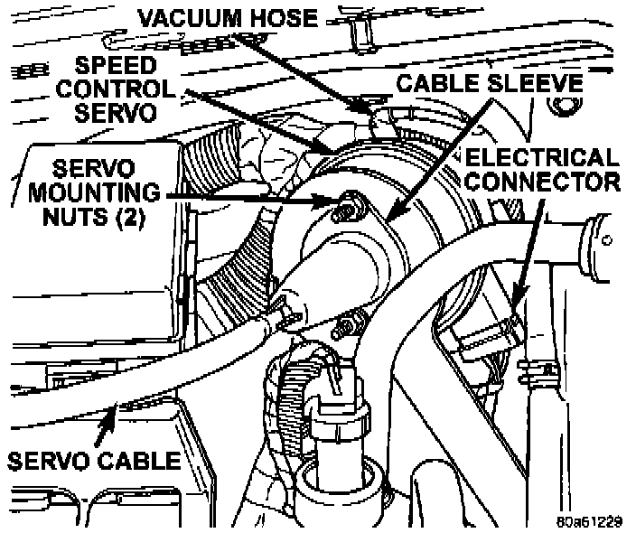
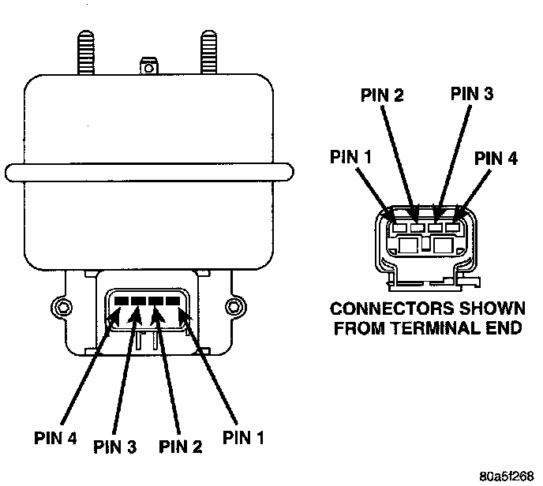

Cruise Control Servo: Testing and Inspection
For complete speed control system diagnosis, refer to the appropriate Powertrain Management/Computers and Control Systems/Testing and Inspection/Diagnostic Charts Procedures. To test the speed control servo only, refer to the following:The engine must be started and running for the following voltage tests:
1. Start engine.
Servo Electrical Connector Location:

2. Disconnect 4-way electrical connector at servo.
3. Turn speed control switch to ON position.
Fig. 4 Servo Harness Connector:

4. Check for battery voltage at pin-3 of wiring harness 4-way connector. This is the 12 Volt feed from the stoplamp switch. When the brake pedal is depressed, voltage should not be present at pin-3. If voltage is not present with brake pedal not depressed, check for continuity between servo and stop lamp switch. Also check stop lamp switch adjustment.
5. Connect a small gauge jumper wire between the disconnected servo harness 4-way connector pin-3, and pin-3 on the servo. Check for battery voltage at pins-1, 2 and 4 of the servo. If battery voltage is not at these pins, replace the servo.
6. Turn ignition switch to OFF position. Check for continuity between disconnected servo harness 4-way connector pin-4 and a good ground. There should be continuity If not OK, repair open circuit to ground as required.